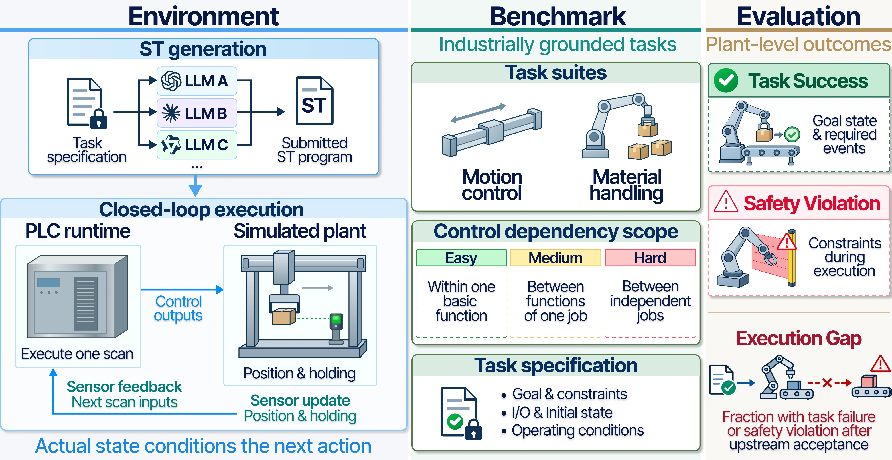
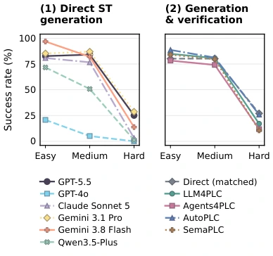
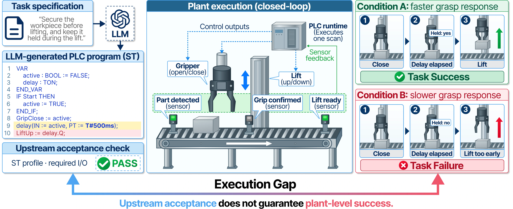

Task Success
Reach the required goal state with the specified events, ordering, and hold conditions.
A benchmark for industrial control · Preprint 2026
1 Dongguk University2 MOAI technologies
From code to consequences
Follow each control command through device motion, workpiece transfer, and sensor feedback.
Explore the execution loop01 / Overview
Programmable logic controllers (PLCs) coordinate industrial equipment by reading sensor inputs and issuing control commands. To assess an LLM-generated PLC program, we need to observe how those commands affect device and workpiece states.
PLCWorld couples Structured Text (ST) execution with simulated plant responses and sensor feedback in a common closed-loop environment. It provides 100 synthetic tasks and 473 registered task–condition pairs across Motion Control and Material Handling, grounded in control relations identified in industrial PLC programs and engineering documentation.
Our protocol measures Task Success and Safety Violation separately. Comparing these outcomes with submission-profile acceptance reveals the Execution Gap: programs that pass an upstream check can still fail their task or violate a constraint during execution.

Reach the required goal state with the specified events, ordering, and hold conditions.
Track breaches of specified constraints throughout execution, including after completion claims.
Measure task failure or observed violation among cases whose programs pass the upstream check.
02 / Tasks in motion
Six representative tasks from Figure 3 of the paper, recorded in the PLCWorld replay viewer.
Coordinate a basic control operation.
15 tasks per suiteConnect the dependent functions of one job.
20 tasks per suiteCoordinate independent jobs sharing resources.
15 tasks per suiteShowing all 6 tasks
Reference-program replays, with close camera views. Motion speed is relative to simulation time, with brief holds at the beginning and end. Each clip illustrates one execution condition. Compare with Figure 3 ↗
03 / Evaluation
Six LLMs and four adapted generation-and-verification workflows, evaluated under a common protocol.
Direct GPT-5.5 · Pooled by case count
Task Success across both suites. These comparisons describe different task groups; they do not isolate the effect of dependency scope.

| Model / Method | Easy | Medium | Hard | Execution Gap ↓ | |||
|---|---|---|---|---|---|---|---|
| SR ↑ | SVR ↓ | SR ↑ | SVR ↓ | SR ↑ | SVR ↓ | ||
SR: Task Success rate. SVR: Safety Violation rate among cases entering plant execution. Execution Gap is pooled across suites and conditional on submission-profile acceptance. Direct rows pool three independent generations per task; workflow comparisons use a matched GPT-5.5 baseline.
Practitioner review, alternative programs, specification–evaluator alignment checks, and independent ST-runtime comparisons. All 542 targeted counterexamples activate their designated rules under at least one registered condition.
04 / The execution gap
The same accepted program can produce different outcomes as device response times change.

05 / Citation
If you use PLCWorld in your research, please cite our preprint.
@misc{kim2026plcworld,
title = {PLCWorld: Benchmarking LLM-Generated PLC Programs
in Closed-Loop Plant Simulation},
author = {Kim, Yunji and Lee, Yunseok and Seo, Hyunwoo
and Choi, Jaerim and Lee, Woojin},
year = {2026},
note = {Preprint}
}